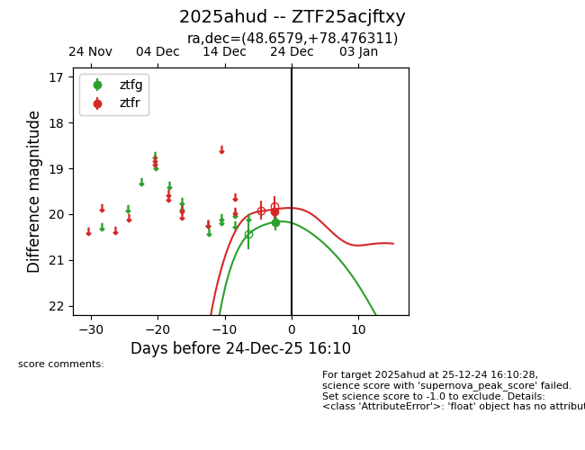
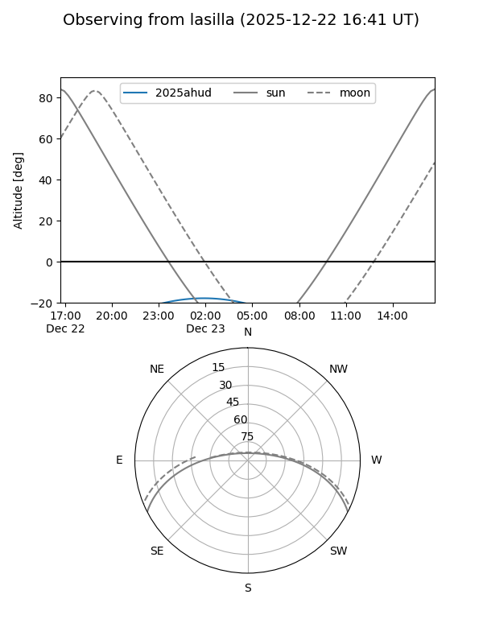
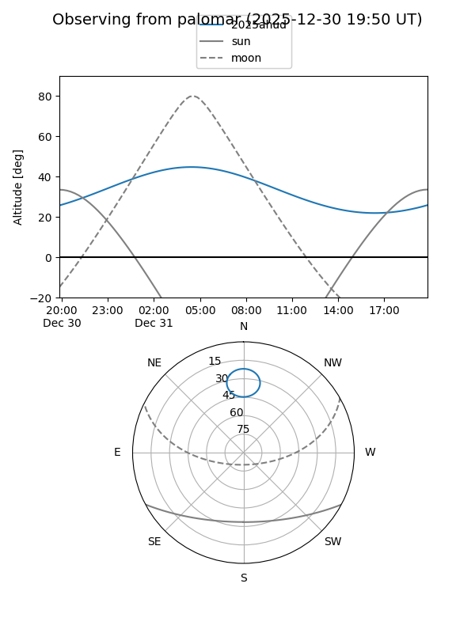
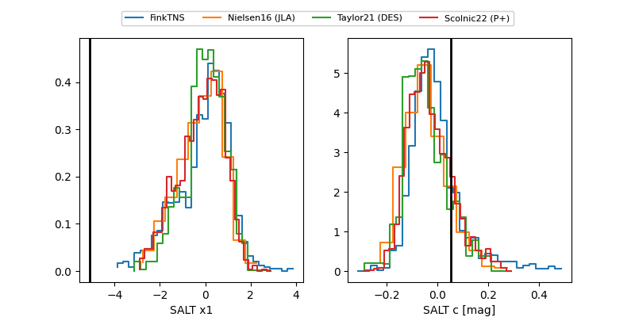

2025ahud
Target 2025ahud at 2025-12-31 17:00
Aliases and brokers:
FINK:
Lasair:
ALeRCE:
TNS:
YSE:
alt names
ZTF25acjftxy (ztf,fink_ztf)
2025ahud (tns,yse)
Coordinates:
equatorial (ra, dec) = 48.6579,+78.47631
equatorial (HMS+DMS) = 03:14:37.89,+78:28:34.72
galactic (l, b) = (129.9742,+17.61297)
Flags:
Photometry:
last ztfg=20.17, ztfr=19.95
1 ztfg, 1 ztfr detections
Lightcurve

Visibility


Additional plots
